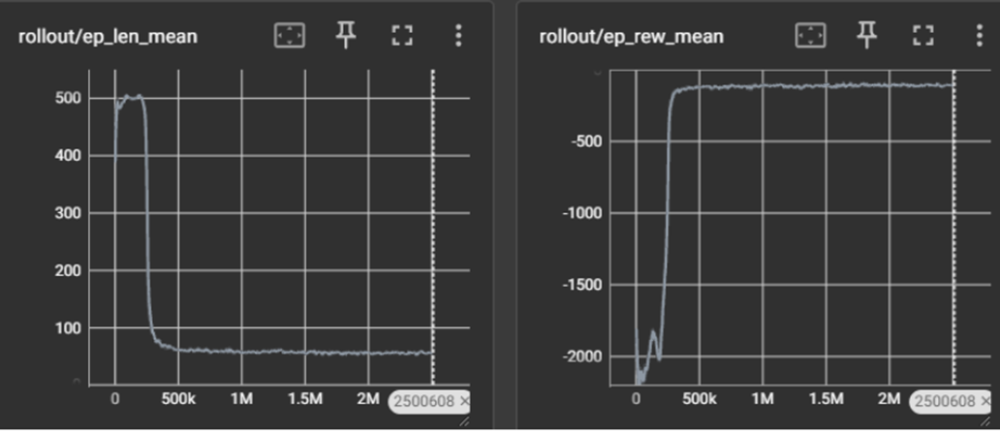

RL for Drone Navigation
In this project, an RL environment will be setup to train an object to start from a starting point and pan towards the destination in 2D space
!pip install stable_baselines3
!pip install gymnasium
!pip install tensorboard
!pip install ipywidgetsimport stable_baselines3
from gymnasium import spaces, Env
import numpy as np
GRID_SIZE = np.array([10.0, 10.0], dtype=np.float32)
MAGN_RANGE = np.array([0.0, 1.0], dtype=np.float32)
HEAD_RANGE = np.array([0.0,2 * np.pi], dtype=np.float32)
d_magn = 0.1
TARGET_POSITION = np.array([7.0, 5.0], dtype=np.float32)
REWARD_CIRCLE_RADIUS = 0.5 #units
MAX_EPISODE_STEPS = 512
MAX_RW_CIRCLE_STEPS = 16
class Env2D(Env):
def __init__(self):
# Action space: Magnitude and Heading
self.action_space = spaces.Box(low = np.array([MAGN_RANGE[0], HEAD_RANGE[0]]),
high = np.array([MAGN_RANGE[1], HEAD_RANGE[1]]),
dtype=np.float32)
# Observation space: Position, Target Position, Heading
low_obs = np.array([#Minimum values these can take
0, 0,
TARGET_POSITION[0], TARGET_POSITION[1],
HEAD_RANGE[0],
MAGN_RANGE[0]
], dtype=np.float32)
high_obs = np.array([#Maximum values these can take
GRID_SIZE[0] , GRID_SIZE[1],
TARGET_POSITION[0], TARGET_POSITION[1],
HEAD_RANGE[1],
MAGN_RANGE[1]
], dtype=np.float32)
self.observation_space = spaces.Box(low = low_obs, high = high_obs, dtype = np.float32)
# Call reset to initialize the agent's position and heading
self.reset()
def reset(self, seed=None):
if seed:
np.random.seed(seed)
# Initialize agent positioned randomly within the grid, with random heading and 0 magnitude
self.position = np.array([np.random.uniform(0, GRID_SIZE[0]), np.random.uniform(0, GRID_SIZE[1])], dtype=np.float32)
self.heading = np.random.uniform(HEAD_RANGE[0], HEAD_RANGE[1])
self.magnitude = 0.0
# Initialize reward buffer for the last MAX_RW_CIRCLE steps
self.reward_buffer = np.full((MAX_RW_CIRCLE_STEPS,), -np.inf)
#Episode length counter
self.current_step = 0
return self._get_obs(), {}
def _get_obs(self):
# Return observation space
return np.array([
self.position[0] , self.position[1],
TARGET_POSITION[0], TARGET_POSITION[1],
self.heading,
self.magnitude
], dtype=np.float32)
def step(self, action):
# Update and clip heading and magnitude based on action
self.magnitude = np.clip(action[0], MAGN_RANGE[0], MAGN_RANGE[1])
self.heading = (self.heading + action[1]) % (2 * np.pi)
# Move agent according to given heading
dx = self.magnitude * np.cos(self.heading) * d_magn
dy = self.magnitude * np.sin(self.heading) * d_magn
self.position = np.array([self.position[0] + dx, self.position[1] + dy], dtype=np.float32)
self.position = np.clip(self.position, [0, 0], GRID_SIZE)
# Calculate reward
distance_to_target = np.linalg.norm(self.position - TARGET_POSITION)
reward = -distance_to_target
# Update reward buffer
self.reward_buffer[:-1] = self.reward_buffer[1:]
self.reward_buffer[-1] = reward
#increment step counter
self.current_step += 1
# Calculate 'truncated'
truncated = self.current_step >= MAX_EPISODE_STEPS
# Calculate 'terminated'
terminated = np.all(self.reward_buffer >= -REWARD_CIRCLE_RADIUS)
return self._get_obs(), reward, bool(terminated), bool(truncated), {}
def render(self, mode='human'):
pass
def close(self):
passIn order to make it faster it was trained for 2500000 steps but actually it needs 25000000 steps to successfully reach the target
from stable_baselines3 import PPO
from stable_baselines3.common.env_checker import check_env
env = Env2D()
check_env(env)
#log
log_dir = "logs/" #tensorboard --logdir logs
# Initialize the agent
train = True #true
if train:
model = PPO("MlpPolicy", env, verbose=0, tensorboard_log=log_dir)
model.learn(total_timesteps=2500000, progress_bar=True)env = Env2D()
check_env(env)
frames_all = []
for _ in range(10):
#Run one collect
obs, _info = env.reset()
frames = []
# Run an episode
terminated = truncated = False
while not (terminated or truncated):
#compute action
action, state_ = model.predict(obs, deterministic=True)
#store obs-state-action
frames.append((obs, action))
#environment takes action
obs, reward, terminated, truncated, _info = env.step(action)
frames_all.append(frames)
env.close()
For each iteration, the motion of object can be visualized
import pygame
import math
# Initialize pygame
pygame.init()
# Set the dimensions of the window
WIDTH, HEIGHT = 800, 800
win = pygame.display.set_mode((WIDTH, HEIGHT))
pygame.display.set_caption("Simple Animation")
# Colors
WHITE = (255, 255, 255)
RED = (255, 0, 0)
BLUE = (0, 0, 255)
GREEN = (0, 255, 0)
# Scale factor to fit (10,10) position within the window size
SCALE = 80 # 800/10 = 80
def draw_position_and_heading(position, target, heading, thrust):
# Draw the position
pygame.draw.circle(win, RED, (int(position[0]*SCALE), int(position[1]*SCALE)), 10)
# Draw the target
pygame.draw.circle(win, GREEN, (int(target[0]*SCALE), int(target[1]*SCALE)), 5)
# Draw the heading
end_x = int(position[0]*SCALE + thrust * 50 * math.cos(heading))
end_y = int(position[1]*SCALE + thrust * 50 * math.sin(heading))
pygame.draw.line(win, BLUE, (int(position[0]*SCALE), int(position[1]*SCALE)), (end_x, end_y), 2)
def main(frames):
clock = pygame.time.Clock()
running = True
frames_idx = 0
while running:
for event in pygame.event.get():
if event.type == pygame.QUIT:
running = False
win.fill(WHITE) # Fill the screen with white
for frames_set in frames_all:
if frames_idx < len(frames_set):
frame = frames_set[frames_idx]
position = frame[0][0:2]
target = frame[0][2:4]
heading = frame[0][4]
thrust = frame[1][0]
draw_position_and_heading(position, target, heading, thrust)
frames_idx += 1
pygame.time.wait(100)
pygame.display.update()
pygame.quit()
main(frames_all)